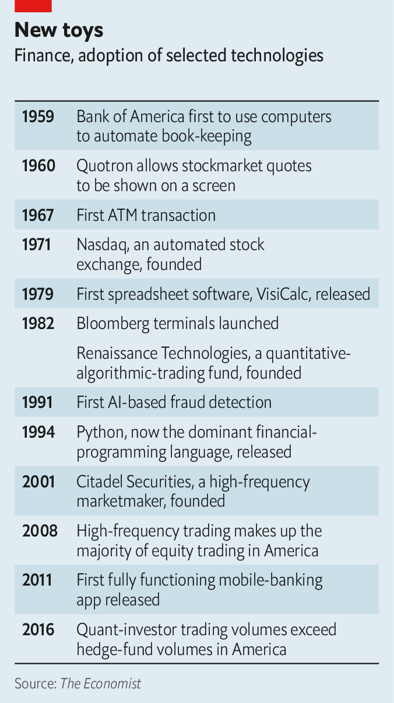
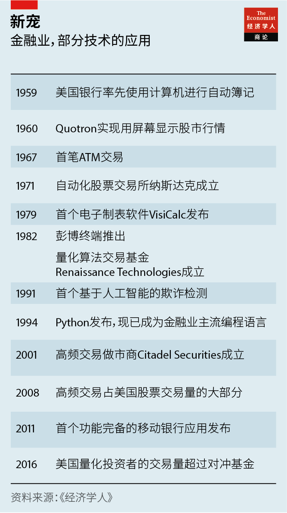

2021-01-04T03:45:11+00:00
High-tech finance
高科技金融
高科技金融
Quantum for quants
量化交易量子化
量化交易量子化
Wall Street’s latest shiny new thing: quantum computing
华尔街新宠：量子计算
華爾街新寵：量子計算

THE FINANCE industry has had a long and profitable relationship with computing. It was an early adopter of everything from mainframe computers to artificial intelligence (see timeline). For most of the past decade more trades have been done at high frequency by complex algorithms than by humans. Now big banks have their eyes on quantum computing, another cutting-edge technology.
金融业长期保持着与计算技术有利可图的关系。在采用从大型主机到人工智能的各种技术时，这个行业都走在前头（参见时间表）。在过去十年的大部分时间里，由复杂算法驱动的高频交易的交易量已经超过了人工交易。现在，大银行又盯上了另一项尖端技术——量子计算。
金融業長期保持着與計算技術有利可圖的關係。在採用從大型主機到人工智能的各種技術時，這個行業都走在前頭（參見時間表）。在過去十年的大部分時間裡，由複雜算法驅動的高頻交易的交易量已經超過了人工交易。現在，大銀行又盯上了另一項尖端技術——量子計算。
This is the idea, developed by physicists in the 1980s, that the counter-intuitive properties of quantum mechanics might allow for the construction of computers that could perform mathematical feats that no non-quantum machine would ever be capable of. The promise is now starting to be realised. Computing giants like Google and IBM, as well as a flock of smaller competitors, are building and refining quantum hardware.
物理学家在上世纪80年代提出，借助量子力学种种与直觉相悖的特性，或许可以发明出量子计算机，实现非量子计算机永远无法企及的运算壮举。这个远景现在已开始逐渐成为现实。谷歌和IBM等计算巨头以及一大批较小的竞争对手都在打造和完善量子硬件。
物理學家在上世紀80年代提出，藉助量子力學種種與直覺相悖的特性，或許可以發明出量子計算機，實現非量子計算機永遠無法企及的運算壯舉。這個遠景現在已開始逐漸成為現實。谷歌和IBM等計算巨頭以及一大批較小的競爭對手都在打造和完善量子硬件。
Quantum computers will not beat their classical counterparts at everything. But much of the maths at which they will excel is of interest to bankers. At a conference on December 10th William Zeng, head of quantum research at Goldman Sachs told the audience that quantum computing could have a “revolutionary” impact on the bank, and on finance more broadly.
虽然量子计算机并不会在所有领域都击败经典计算机，但它们擅长解决的许多数学问题却让银行家甚感兴趣。在12月10日的一次会议上，高盛的量子研究负责人威廉·曾（William Zeng）对听众表示，量子计算可能给这家银行以及更广泛的金融产业带来“革命性”影响。
雖然量子計算機並不會在所有領域都擊敗經典計算機，但它們擅長解決的許多數學問題卻讓銀行家甚感興趣。在12月10日的一次會議上，高盛的量子研究負責人威廉·曾（William Zeng）對聽眾表示，量子計算可能給這家銀行以及更廣泛的金融產業帶來“革命性”影響。
Many financial calculations boil down to optimisation problems, a known strength of quantum computers, says Marco Pistoia, the head of a research unit at JPMorgan Chase, who spent many years at IBM before that. Quantum quants hope their machines will boost profits by speeding up asset pricing, digging up better-performing portfolios and making machine-learning algorithms more accurate. A study by BBVA, a Spanish bank, concluded in July that quantum computers could boost credit-scoring, spot arbitrage opportunities and accelerate so-called “Monte Carlo” simulations, which are commonly used in finance to try to model the likely behaviour of markets.
摩根大通研究部门负责人、曾在IBM工作多年的马可·皮斯托亚（Marco Pistoia）说，许多金融运算归根结底都属于最优化问题，而这正是量子计算机众所周知的强项。有量子计算加持的量化投资机构希望通过加速资产定价、挖掘表现更好的投资组合、提高机器学习算法的准确性来提升利润。西班牙对外银行（BBVA）在7月完成的研究称，量子计算机可以增强信用评分、发现套利机会，并加速“蒙特卡罗”模拟——金融业广泛使用这种模拟预测市场动向。
摩根大通研究部門負責人、曾在IBM工作多年的馬可·皮斯托亞（Marco Pistoia）說，許多金融運算歸根結底都屬於最優化問題，而這正是量子計算機眾所周知的強項。有量子計算加持的量化投資機構希望通過加速資產定價、挖掘表現更好的投資組合、提高機器學習算法的準確性來提升利潤。西班牙對外銀行（BBVA）在7月完成的研究稱，量子計算機可以增強信用評分、發現套利機會，並加速“蒙特卡羅”模擬——金融業廣泛使用這種模擬預測市場動向。
Finance is not the only industry looking for a way to profit from even the small, unstable quantum computers that mark the current state of the art; sectors from aerospace to pharmaceuticals are also hunting for a “quantum advantage”. But there are reasons to think finance may be among the first to find it. Mike Biercuk of Q-CTRL, a startup that makes control software for quantum computers, points out that a new financial algorithm can be deployed faster than a new industrial process. The size of financial markets means that even a small advance would be worth a lot of money.
当前最先进的量子计算机仍然规模小且不稳定，但即便如此，也不是只有金融业在试图利用它获利——从航空航天到制药等众多行业都在追寻“量子优势”。但有理由认为金融业可能是捷足先登的行业之一。Q-CTRL是一家为量子计算机开发控制软件的创业公司，公司创始人迈克·比埃库克（Mike Biercuk）指出，部署一种新的金融算法可能比部署新的工业流程要快。金融市场的规模如此庞大，就算小小的进步也会价值连城。
當前最先進的量子計算機仍然規模小且不穩定，但即便如此，也不是只有金融業在試圖利用它獲利——從航空航天到製藥等眾多行業都在追尋“量子優勢”。但有理由認為金融業可能是捷足先登的行業之一。Q-CTRL是一家為量子計算機開發控制軟件的創業公司，公司創始人邁克·比埃庫克（Mike Biercuk）指出，部署一種新的金融算法可能比部署新的工業流程要快。金融市場的規模如此龐大，就算小小的進步也會價值連城。
Banks are also buying in expertise. Firms including BBVA, Citigroup, JPMorgan and Standard Chartered have set up research teams and signed deals with computing firms. The Boston Consulting Group reckons that, as of June, banks and insurers in America and Europe had hired more than 115 experts—a big number for what remains, even in academia, a small specialism. “We have more physics and maths PhDs than some big universities,” jokes Alexei Kondratyev, head of data analytics at Standard Chartered.
银行也在为专业知识掏腰包。包括西班牙对外银行、花旗集团、摩根大通和渣打银行在内的许多公司已经成立了研究团队，并与计算公司签署协议。波士顿咨询集团估计，截至6月，欧美的银行和保险公司已经聘请了超过115名专家。鉴于量子研究即使在学术界也仍属小众，这个数字可谓相当惊人了。渣打银行的数据分析负责人阿列克谢·康德拉特耶夫（Alexei Kondratyev）打趣说：“我们这里的物理和数学博士比一些大型大学还多。”
銀行也在為專業知識掏腰包。包括西班牙對外銀行、花旗集團、摩根大通和渣打銀行在內的許多公司已經成立了研究團隊，並與計算公司簽署協議。波士頓諮詢集團估計，截至6月，歐美的銀行和保險公司已經聘請了超過115名專家。鑒於量子研究即使在學術界也仍屬小眾，這個數字可謂相當驚人了。渣打銀行的數據分析負責人阿列克謝·康德拉特耶夫（Alexei Kondratyev）打趣說：“我們這裡的物理和數學博士比一些大型大學還多。”
Startups are exploring possibilities too. Enrique Lizaso of Multiverse Computing reckons his firm’s quantum-enhanced algorithms can spot fraud more effectively, and around a hundred times faster, than existing ones. The firm has also experimented with portfolio optimisation, in which analysts seek well-performing investment strategies. Multiverse re-ran decisions made by real traders at a bank. The job was to choose, over the course of a year, the most profitable mix from a group of 50 assets, subject to restrictions, such as how often trades could be made.
创业公司也在探索其中的种种可能。平行宇宙计算公司（Multiverse Computing）的恩里克·利萨索（Enrique Lizaso）认为，他的公司经量子增强的算法可以更有效地甄别欺诈，大概比现有算法快约100倍。该公司也测试投资组合优化，帮助分析师找到表现优异的投资策略。它重演一家银行的真人交易员所做的决策。这项工作要求在一年时间内，在交易频率等限制条件下，从50项资产中选择盈利能力最强的组合。
創業公司也在探索其中的種種可能。平行宇宙計算公司（Multiverse Computing）的恩里克·利薩索（Enrique Lizaso）認為，他的公司經量子增強的算法可以更有效地甄別欺詐，大概比現有算法快約100倍。該公司也測試投資組合優化，幫助分析師找到表現優異的投資策略。它重演一家銀行的真人交易員所做的決策。這項工作要求在一年時間內，在交易頻率等限制條件下，從50項資產中選擇盈利能力最強的組合。
The result was a problem with around 10^1300 possible solutions, a number that far outstrips the number of atoms in the visible universe. In reality, the bank’s traders, assisted by models running on classical computers, managed an annual return of 19%. Depending on the amount of volatility investors were prepared to put up with, Multiverse’s algorithm generated returns of 20-80%—though it stops short of claiming a definitive quantum advantage.
这样就产生了一个约有10^1300个可能解的问题，这个数字远远超过可见宇宙中的原子总数。在现实中，该银行交易员在经典计算机上运行的模型的辅助下实现了19%的年回报率。而根据投资者愿意承受的不同波动幅度，平行宇宙公司的算法产生了20%到80%不等的回报——尽管还没有达成绝对的量子优势。
這樣就產生了一個約有10^1300個可能解的問題，這個數字遠遠超過可見宇宙中的原子總數。在現實中，該銀行交易員在經典計算機上運行的模型的輔助下實現了19%的年回報率。而根據投資者願意承受的不同波動幅度，平行宇宙公司的算法產生了20%到80%不等的回報——儘管還沒有達成絕對的量子優勢。
Not all potential uses are so glamorous. Monte Carlo simulations are often used in regulatory stress tests. Christopher Savoie of Zapata, a quantum-computing firm based in Boston, recalls one bank executive telling him: “Don’t bring me trading algorithms, bring me a solution to CCAR [an American stress-test regulation]. That stuff eats up half my computing budget.”
并非所有的潜在应用都如此引人入胜。蒙特卡罗模拟常用于监管压力测试。总部位于波士顿的量子计算公司Zapata的克里斯多夫·萨瓦（Christopher Savoie）记得一位银行高管曾对他说：“不用给我交易算法，能想办法让我通过CCAR（美国一项压力测试法规）就行。这玩意吃掉了我一半的计算预算。”
並非所有的潛在應用都如此引人入勝。蒙特卡羅模擬常用於監管壓力測試。總部位於波士頓的量子計算公司Zapata的克里斯多夫·薩瓦（Christopher Savoie）記得一位銀行高管曾對他說：“不用給我交易算法，能想辦法讓我通過CCAR（美國一項壓力測試法規）就行。這玩意吃掉了我一半的計算預算。”
All this is promising. But quantum financiers acknowledge that, for now, hardware is a limitation. “We’re not yet able to perform these calculations at a scale where a quantum machine offers a real-world advantage over a classical one,” says Mr Biercuk. One rough way to measure a quantum computer’s capability is its number of “qubits”, the analogue of classical computing’s 1-or-0 bits. For many problems a quantum computer with thousands of stable qubits is provably far faster than any non-quantum machine that could ever be built—it just does not exist yet.
所有这些前景无限。但采用量子技术的金融家也承认，目前硬件仍是软肋。“现在量子计算机运算的规模还是太小，不足以在真实世界里实现对经典计算机的优势。” 比埃库克说。对量子计算机性能的一种粗略的衡量方法是看它的“量子比特”数量，量子比特类似于经典计算机中的1或0。对于许多计算问题来说，一台拥有数千个稳定量子比特的量子计算机理论上要比任何能造出来的非量子机器都快得多——只是它尚未出现。
所有這些前景無限。但採用量子技術的金融家也承認，目前硬件仍是軟肋。“現在量子計算機運算的規模還是太小，不足以在真實世界裡實現對經典計算機的優勢。” 比埃庫克說。對量子計算機性能的一種粗略的衡量方法是看它的“量子比特”數量，量子比特類似於經典計算機中的1或0。對於許多計算問題來說，一台擁有數千個穩定量子比特的量子計算機理論上要比任何能造出來的非量子機器都快得多——只是它尚未出現。
For now, the field must make do with small, unstable devices, which can perform calculations for only tiny fractions of a second before their delicate quantum states break down. John Preskill of the California Institute of Technology has dubbed these “NISQs”—“Noisy, Intermediate-Scale Quantum computers”.
目前，量子计算只能将就着使用不稳定的小型设备，它们的运算维持时间远远不到一秒，然后其精细的量子态就会坍塌。加州理工学院的约翰·裴士基（John Preskill）给这些设备取名“NISQ”，即“带噪声的中等规模量子计算机”。
目前，量子計算只能將就着使用不穩定的小型設備，它們的運算維持時間遠遠不到一秒，然後其精細的量子態就會坍塌。加州理工學院的約翰·裴士基（John Preskill）給這些設備取名“NISQ”，即“帶噪聲的中等規模量子計算機”。
Bankers are working on ways to conduct computations on such machines. Mr Zeng of Goldman pointed out that the computational resources needed to run quantum algorithms have fallen as programmers have tweaked their methods. Mr Pistoia points to papers his team has written exploring ways to scale useful financial calculations into even small machines.
银行家们正想方设法在这样的机器上完成运算。高盛的威廉·曾指出，随着程序员调整了方法，运行量子算法所需的计算资源已经缩减。皮斯托亚称他的团队撰写了一些论文，探讨如何缩小实用金融计算的规模，使之可以在小型机器上运行。
銀行家們正想方設法在這樣的機器上完成運算。高盛的威廉·曾指出，隨着程序員調整了方法，運行量子算法所需的計算資源已經縮減。皮斯托亞稱他的團隊撰寫了一些論文，探討如何縮小實用金融計算的規模，使之可以在小型機器上運行。
And at some point those programmers will meet hardware-makers coming the other way. In 2019 Google was the first to demonstrate “quantum supremacy”, using a 53-qubit NISQ machine to perform in minutes a calculation that would have taken the world’s fastest supercomputer more than 10,000 years. IBM, which has invested heavily in quantum computing, reckons it can build a 1,000-qubit machine by 2023. Both it and Google have talked of a million qubits by the end of the decade.
程序员和硬件制造商相向而行，总有一天双方可以汇合。2019年，谷歌率先展示了“量子霸权”，用53个量子比特的NISQ机器在几分钟内完成了世界上最快的超级计算机需要一万多年才能完成的计算。斥巨资研究量子计算的IBM估计自己到2023年可制造出有1000个量子比特的计算机。两家公司都谈到在十年内可以达到一百万量子比特。
程序員和硬件製造商相向而行，總有一天雙方可以匯合。2019年，谷歌率先展示了“量子霸權”，用53個量子比特的NISQ機器在幾分鐘內完成了世界上最快的超級計算機需要一萬多年才能完成的計算。斥巨資研究量子計算的IBM估計自己到2023年可製造出有1000個量子比特的計算機。兩家公司都談到在十年內可以達到一百萬量子比特。
When might the financial revolution come? Mr Savoie thinks simple algorithms could be in use within 18 months, with credit-scoring a plausible early application. Mr Kondratyev says three to five years is more realistic. But the crucial point, says one observer, is that no one wants to be late to the party. One common worry is that whoever makes a breakthrough first may choose to reap the rewards in obscurity, rather than broadcast the fact to the world. After all, says Mr Biercuk, “that is how high-frequency trading got started”. ■
这一金融革命究竟何时到来？萨瓦认为18个月内就可以部署简单的算法，早期的应用很可能是信用评分。康德拉特耶夫则认为，在三到五年内实现可能更加现实。但一位观察人士说，关键在于没人希望落在后面。大家普遍担忧的是，无论谁首先取得突破，都可能不会公之于众而是选择闷声发大财。毕竟，比埃库克说，“高频交易就是这么来的”。
這一金融革命究竟何時到來？薩瓦認為18個月內就可以部署簡單的算法，早期的應用很可能是信用評分。康德拉特耶夫則認為，在三到五年內實現可能更加現實。但一位觀察人士說，關鍵在於沒人希望落在後面。大家普遍擔憂的是，無論誰首先取得突破，都可能不會公之於眾而是選擇悶聲發大財。畢竟，比埃庫克說，“高頻交易就是這麼來的”。